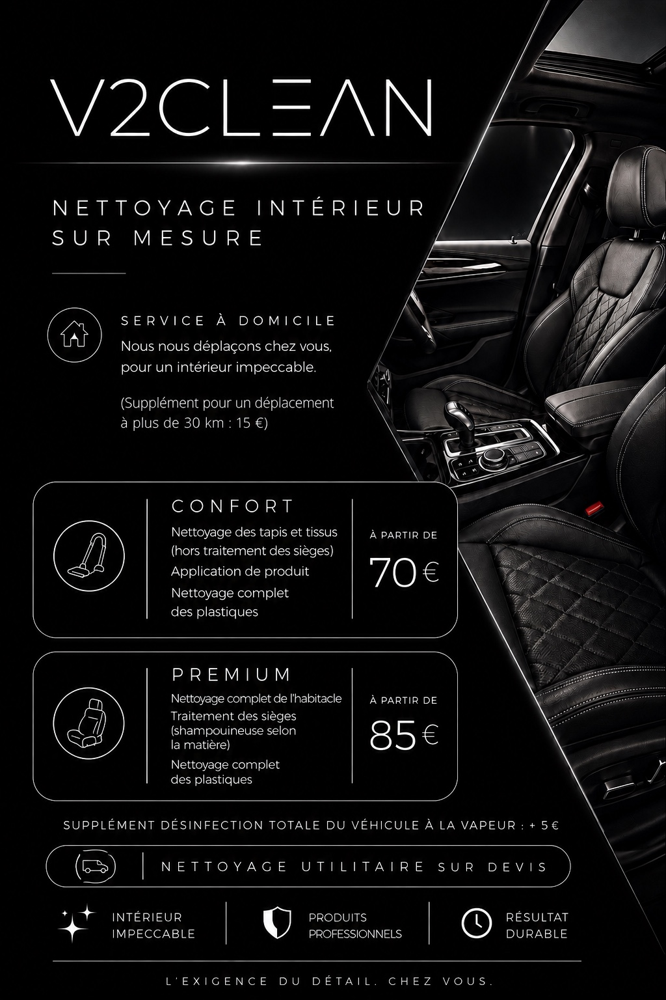

CONFORT70 ۈ partir de
- Nettoyage des tapis et tissus
- Hors traitement des sièges
- Application de produit
- Nettoyage complet des plastiques
NETTOYAGE INTÉRIEUR SUR MESURE
V2CLEAN se déplace à domicile pour redonner à votre véhicule un intérieur propre, soigné et durable.

NOS FORMULES
Déplacement à domicile inclus dans un rayon de 30 km. Au-delà de 30 km : +15 €.
POURQUOI V2CLEAN ?
Un nettoyage soigné pour retrouver un habitacle propre et agréable.
Des produits adaptés aux différentes surfaces et matières de votre véhicule.
Une prestation pensée pour offrir un résultat propre et durable.
SERVICE À DOMICILE
Pas besoin de vous déplacer : V2CLEAN vient directement à votre domicile pour prendre soin de l’intérieur de votre véhicule.
CONTACT
Pour connaître les disponibilités et réserver votre prestation, contactez V2CLEAN.
Téléphone et réseaux sociaux à personnaliser avant mise en ligne.